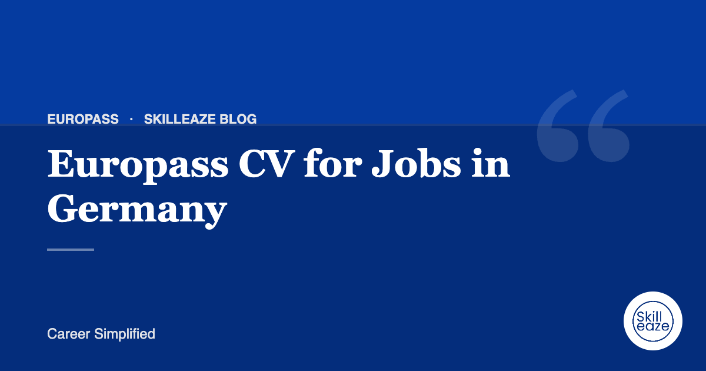

Europass CV for Jobs in Germany
What German employers check on a CV, and how to present your qualifications and language skills.

Qualifications matter
German recruiters look closely at degrees, certifications and recognition of foreign qualifications. List them precisely with dates and institutions.
Language skills
State your German and English levels honestly using the CEFR scale (A1 to C2). Include certificates such as Goethe or TestDaF if you have them.
Our team writes your Europass CV from your real experience. INR 590 · AED 25 · USD 9 (50% off).
Clear, complete dates
Gaps and vague dates raise questions. Use month and year for every role and explain longer gaps briefly.
Europass or Lebenslauf
Some employers accept Europass; many prefer a German-style Lebenslauf. Check the job advert and the company's application portal.
Cover letter
German applications usually include a tailored cover letter (Anschreiben). Keep it to one page and link your experience to the role.
Frequently asked questions
Do German employers prefer Europass or a Lebenslauf?
Many private German employers expect a tabular Lebenslauf, often with a photo, while public institutions and EU-linked roles may accept or request Europass. If the advert does not specify, a clean Lebenslauf-style CV with clear dates is usually the safer choice.
Should my CV be in German?
If the job advert is in German, send your CV and cover letter in German unless told otherwise. For international companies or English-language roles, English is fine. Never claim a German level you cannot demonstrate in an interview.
How do I show foreign qualifications?
State the degree, institution, country and year, and mention recognition if you have it, for example through the anabin database or a statement of comparability. This helps the employer understand how your qualification fits the German system.
General guidance only. Employer requirements vary; always follow the job advert.
 Chat on WhatsApp
Chat on WhatsApp